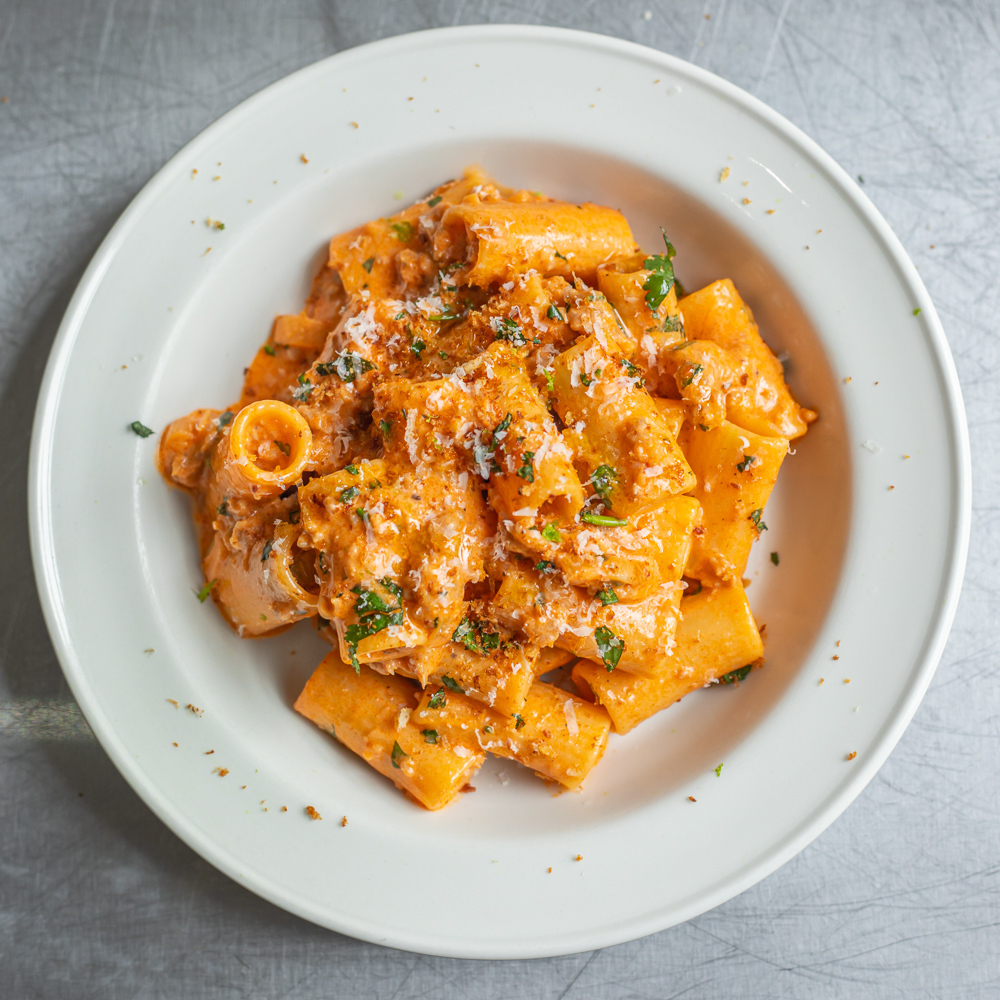

Sausage Gochujang Rigatoni
Home
This spicy sausage pasta is a new favourite of mine, and i'm confident that it’ll become one of yours, too. On the table in 20 mins, it’s a treat for all.

Creamy, sweet, spicy - this dish ticks all the boxes...
Ingredients
Serving 4:
- 6 Caramelised red onion sausages
- 2 Tbsp Butter
- 1 Shallot
- 3 Garlic cloves
- 400g Rigatoni
- 2 Tbsp Gochujang
- 330 ml Single Cream
- 2 Tbsp Honey
- 30g Coriander
- 15g Panko Breadcrumbs
- 40g Parmesan
- Salt
- Pepper
- Olive Oil
Steps
- Decase your sausages and fry the meat in a pan with some oil on a medium-high heat to brown it off
-
NOTE: Deglaze with a splash of water when the bottom of the pan starts to caramelise. You want some of the caramelisation, though, as this will be crucial for the flavour of the dish.
- Once the sausage crumbles are caramelised and golden, remove them from the pan and set them aside
- NOTE: At this point, I like to start the pasta as the rest of the steps can be completed whilst it's boiling. Once it’s al dente, drain the pasta and reserve the water. That pasta water is the key to bringing the sauce together later on.
- Mince your shallot and garlic, then add to pan with butter. Add the gochujang and single cream once the shallots are fried
- Add the parmesan and juice of two limes, along with the honey. Finally, add the caramelised sausage bits back to the pan. Give it a good mix, and leave it to simmer, then season to taste with salt and pepper
- Add a small ladle of pasta water to the sauce and keep mixing until glossy. Add more to perference.
- Add most (but not all) of your chopped coriander to the pasta and give it another mix
- Fry a tablespoon of olive oil in a separate pan before tossing your breadcrumbs in. Take off heat and grate in the remaining parmesan. Top with a scattering of your leftover coriander
- Finish the pasta with your coriander breadcrumbs and grate over some lime zest
Last but not least, serve and tuck in... enjoy!